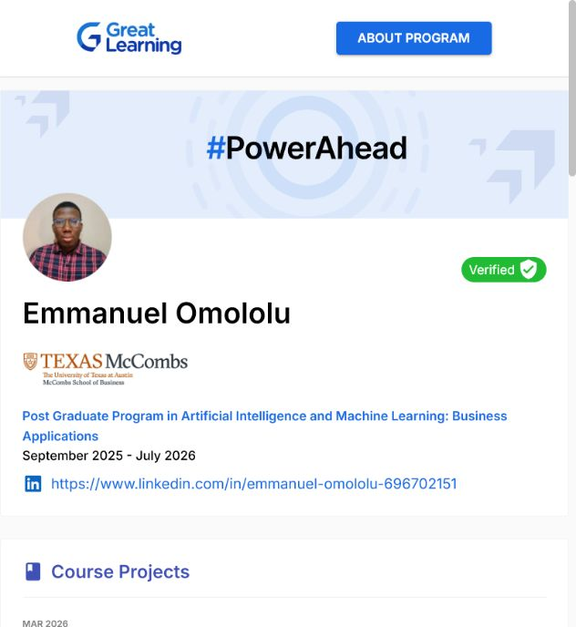
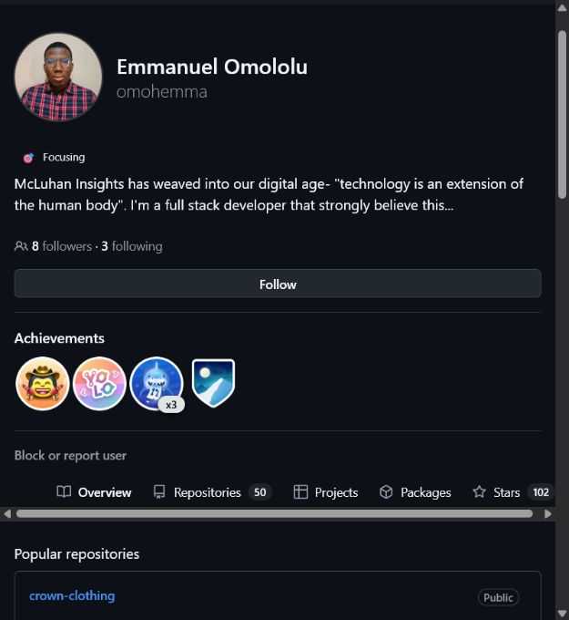
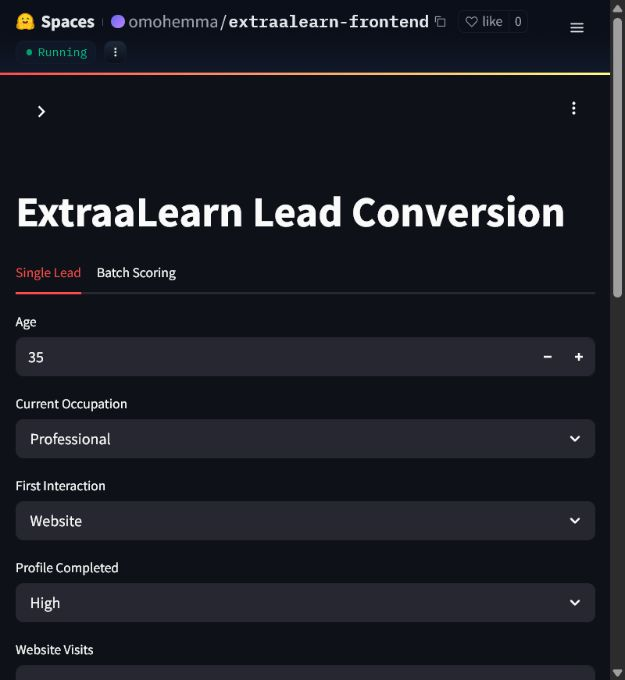
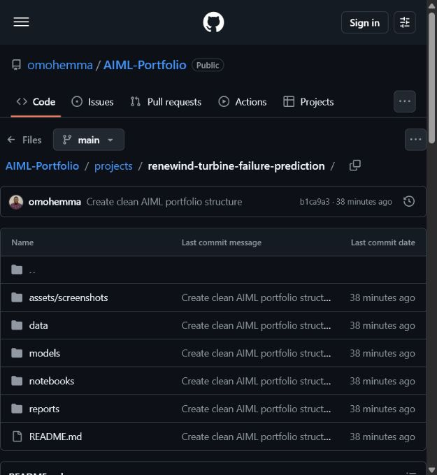
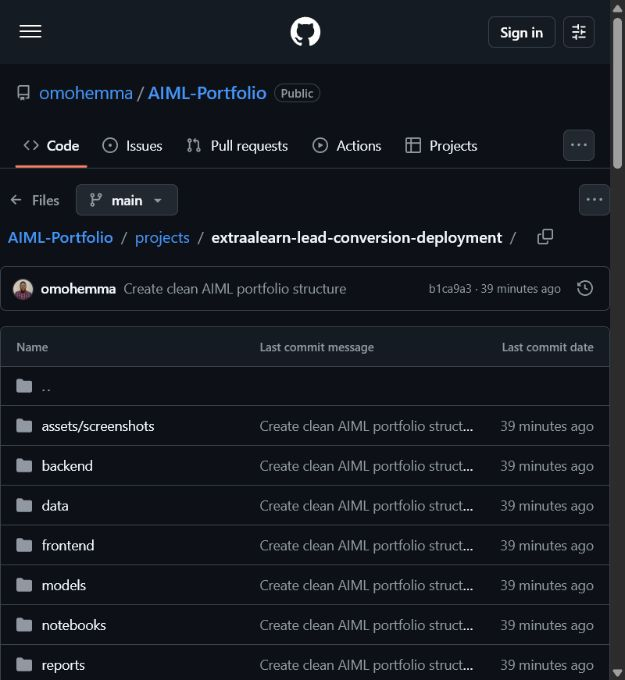
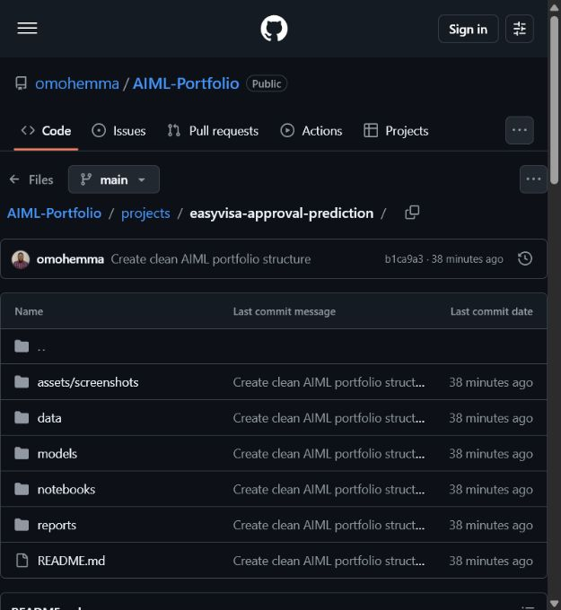
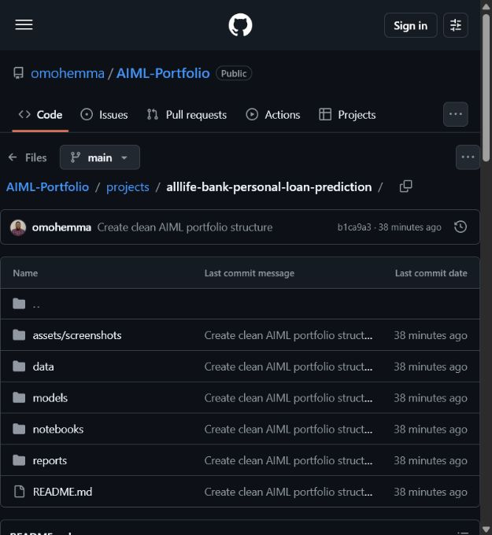
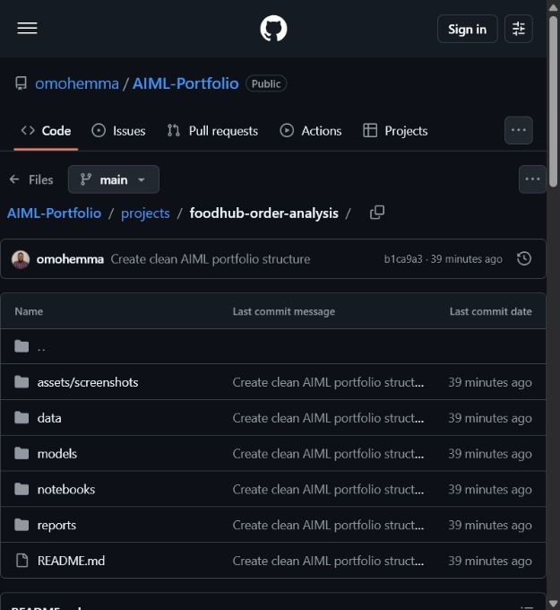

EDA, ML, deep learning, GenAI, and deployment.
Current focus
AI/ML portfolio ready for review.
The public story is intentionally focused on AI/ML work. Company software engineering work remains confidential, while the Great Learning portfolio, GitHub projects, proof screenshots, and live ExtraaLearn app provide the reviewable evidence.
Flagship projects
Start with the strongest signal.
These three projects best communicate Emmanuel's current AI/ML direction: trusted retrieval, deep learning, and deployable prediction systems.
Medical Assistant / Healthcare RAG
A healthcare question-answering prototype that combines document preprocessing, retrieval, prompting, and grounded LLM responses.
Reviewer signal: grounded AI workflow for high-trust healthcare information retrieval.
- Why it leads
- Shows judgment around trusted context, answer grounding, and AI use in high-stakes information workflows.
- Core methods
- RAG, LLM prompting, NLP preprocessing, retrieval, and response evaluation.
GitHub
Notebook
Report
Screenshot
ReneWind Turbine Failure Prediction
A predictive maintenance project for wind turbine failure prediction using classification and neural network modeling.
Reviewer signal: deep learning framed around operational risk and renewable energy reliability.
- Why it leads
- Connects deep learning work to operational risk, downtime reduction, and renewable energy reliability.
- Core methods
- EDA, preprocessing, supervised classification, neural networks, activation functions, and evaluation.
GitHub
Notebook
HTML Report
Screenshot
ExtraaLearn Lead Conversion
A lead conversion capstone with tuned AdaBoost modeling, Flask backend packaging, Streamlit frontend, and a public Hugging Face deployment.
Reviewer signal: model development carried through to a public, testable app experience.
- Proof point
- Smoke test returned Converted with 76.0% conversion probability.
- Metrics
- 86.4% accuracy, 75.8% recall, and 76.9% F1 on the test set.
GitHub
Live App
Metrics
Screenshot
Project index
Six complete case studies.
Each project card gives the problem, the technical angle, and the fastest proof path for a recruiter, reviewer, or collaborator.
Medical Assistant
Medical-manual RAG prototype for grounded question answering with LLMs, prompts, retrieval, and NLP preprocessing.
Outcome: source-aware question answering workflow with public code and report proof.
GitHubNotebookPDFScreenshot
ReneWind
Wind turbine failure prediction with EDA, preprocessing, classification, neural network modeling, and evaluation.
Outcome: predictive maintenance analysis connected to downtime and reliability risk.
GitHubNotebookHTMLScreenshot
ExtraaLearn
Lead conversion prediction with tuned AdaBoost, Flask scoring backend, Streamlit frontend, and Docker packaging.
Outcome: public live app with a documented successful prediction smoke test.
GitHubLive AppMetricsScreenshot
EasyVisa
Visa approval prediction using ensemble learning, bagging, boosting, stacking, tuning, and business insight generation.
Outcome: tuned classification workflow with business-facing approval insights.
GitHubNotebookHTMLScreenshot
Personal Loan Campaign
Bank campaign targeting with EDA, preprocessing, decision trees, model improvement, and recommendations.
Outcome: customer targeting analysis with explainable recommendations.
GitHubNotebookHTMLScreenshot
FoodHub
Food delivery analysis with Python, NumPy, Pandas, Seaborn, univariate and bivariate EDA, and recommendations.
Outcome: operational EDA translated into practical business recommendations.
GitHubNotebookHTMLScreenshot
Technical strengths
From notebook analysis to usable AI interfaces.
The portfolio is strongest where modeling, evaluation, and practical delivery meet.
GenAI and NLP
RAG, LLM prompting, retrieval workflows, document preprocessing, and grounded assistant prototyping.
Machine Learning
Classification, decision trees, bagging, boosting, stacking, tuning, and model comparison.
Deep Learning
Neural networks, activation functions, supervised classification, and predictive maintenance framing.
Delivery
Python, Pandas, Seaborn, business recommendations, Flask, Streamlit, Docker, and live app proof.
Proof and status
Everything a reviewer needs to verify the work.
Official program proof, public code, live deployment, screenshots, dataset notes, and certificate status are grouped for quick review.
Official sources reviewers can open immediately.
Portfolio readiness is visible on-page.
- Project summaries are polished and organized by reviewer priority.
- Notebook, report, GitHub, live app, and screenshot evidence are grouped by project.
- ExtraaLearn dataset permission has been granted for public portfolio showcasing.
- PG-AIML certificate is in final capstone verification, with public project proof already available.
Smoke Test Evidence
Live prediction flow verified.
The strongest deployment proof sits first so reviewers can verify the app result before browsing the broader evidence set.

ExtraaLearn prediction result
Public app returned Converted with 76.0% conversion probability.
Open live app
Program Proof
Official profile and identity evidence.
These assets connect the AI/ML work to Emmanuel's public learning profile and GitHub identity.

Official e-portfolio
Program page showing the AIML portfolio context.
Open proof
Public GitHub profile
Profile tying the public repository to the portfolio owner.
Open profile
Live Deployment
ExtraaLearn is publicly testable.
The deployment page gives reviewers a direct route from project summary to working app.

ExtraaLearn frontend
Public deployment home for the lead conversion app.
Open deployment
GitHub Project Proof
Six public project folders reviewers can inspect.
Each screenshot maps to a public repository path with notebooks, reports, data notes, and project summaries.
Healthcare RAG
GenAI question-answering project with notebook and report proof.
Open source
ReneWind
Deep learning case study for wind turbine failure prediction.
Open source
ExtraaLearn
Lead conversion model deployment project with app packaging.
Open source
EasyVisa
Advanced machine learning project for visa approval prediction.
Open source
Personal Loan Campaign
Classical ML case study for campaign targeting and recommendations.
Open source
FoodHub
Python EDA and business analysis project for food delivery operations.
Open source